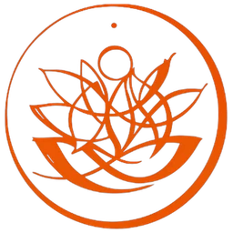

Creative Production
- 14 ads per testing cycle
- Scripts written word for word for every ad
- 2 ads head to head, 4 days per sprint
- 7 sprints per cycle, 14 creatives over 28 days

Yogi Knekoh
Ninety nine seats are already paid for. Three to four of them are filled.
99 Seats
In the room already
6 Days
Monday through Saturday
3 Months
Minimum runway
1. What We Do
The Approach
Meta only, Facebook and Instagram.
A no brainer entry level offer, crystallized together. Likely $29.99 to $49.99 a month.
Two funnels tested head to head: direct to checkout, and lead capture.
Retargeting to recapture the people who engaged but did not convert.
A refreshed Instagram, so they can verify credibility before they buy.
3 to 4 filled today
99 seats already paid for
The room, the schedule and the teaching are already in place. This is only visibility.
2. How It Works
The System
Everything below is included in the monthly fee.
All messaging stays inside what we can legally and responsibly claim. We do not guarantee a specific number of subscribers or class signups.
3. What It Costs
Investment
$3,450 to $3,600
Estimated monthly total
Ads management retainer
$1,500
Meta ad spend
$1,200 to $1,350
Organic content package
About $750
Estimated monthly total
$3,450 to $3,600
Recommended minimum runway
3 months
Total estimated 3 month investment
$10,350 to $10,800
Ad Spend Requirement
$40 to $45 a day on Meta, paid straight to Meta, including $5 a day for retargeting.
Management fees are separate from ad spend and never pass through us.
Not included
Ad spend. CRM or checkout subscription. Website work outside the funnel.
You give us
Ad account access, social account access, offer sign off, and raw class footage.
You keep
Every account, pixel, page and file. In your name from day 1.
Minimum term
3 months.